波形博物館
このページは？
JavaScriptで作った「数式シンセ」 で作成された、数式と波形とスペクトルたちです。画像はリンクになっており、クリックすると、そのように調律された音色と音階にジャンプできます。
ではさっそくどうぞ。
sin波いじり系
絶対値（全波整流）
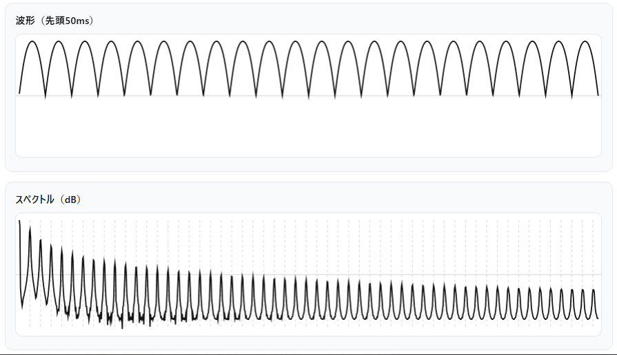
T = 2*pi*ph
wave = abs(sin(0.5*T))
x = wave
wave*0.8sin(0.5*T)としたのはそのためです。後半のないsin（半波整流）
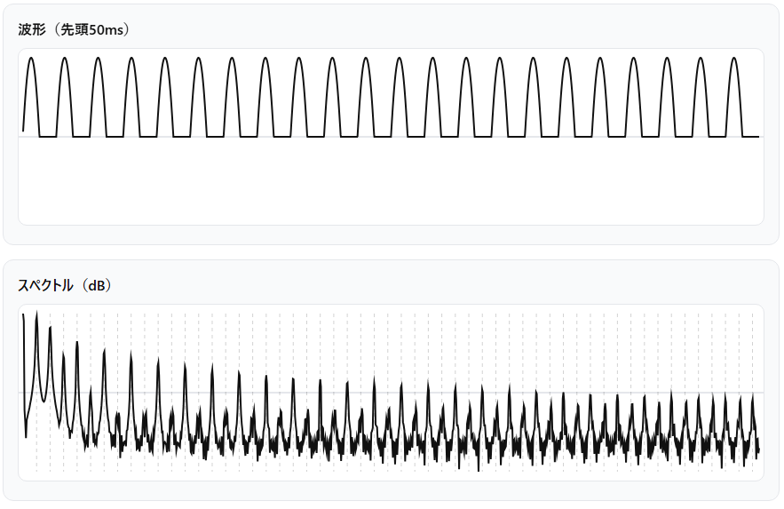
T = 2*pi*ph
wave = max(sin(T),0)
x = wave
wave*1.0一回置きに位相を変更する正弦波

off = 0.5 # 0..1（1=360°, 0.25=90°）
p = ph*2
a = p - floor(p) # 0..1
k = floor(p) # 0 or 1
wave = sin(2*pi*(a + k*off))
(wave*0.8)三周期で位相を変化させる正弦波
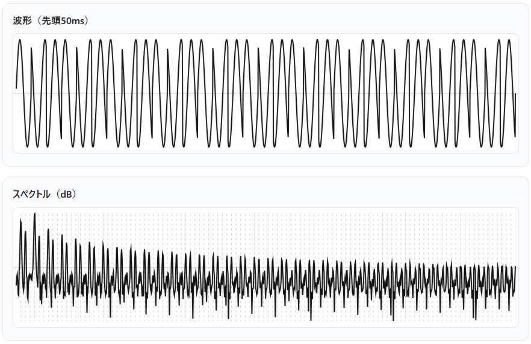
N = 3
p = ph*N
k = floor(p)
a = p - k
off0 = 0.00
off1 = 0.333
off2 = 0.666
off = (k==0 ? off0 : (k==1 ? off1 : off2))
wave = (sin(2*pi*(a + off)))
wave*0.81周期ごとに正弦波と矩形波が切り替わる波形
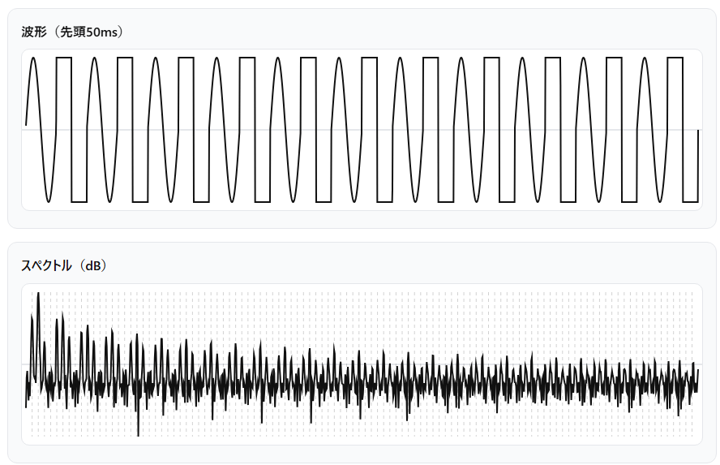
(ph < 0.5) ? sin(4*pi*ph) : ((ph < 0.75) ? 1 : -1)1周期ごとに正弦波とノコギリ波が切り替わる波形
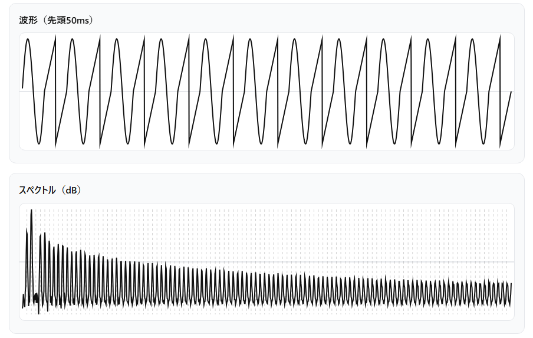
(ph < 0.5) ? sin(4*pi*ph) : (2*((( (ph-0.5)*2 ) + 0.5) % 1) - 1)可算合成an-b系
1n-0波 ／ 可算合成ノコギリ波（5-limit JI）
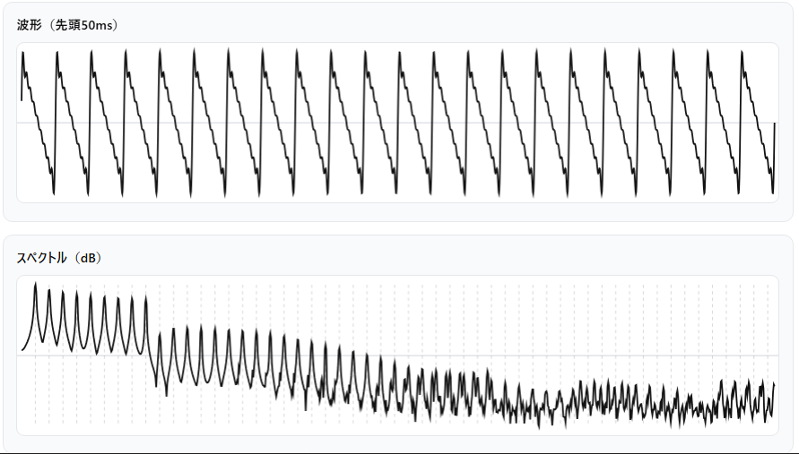
aa = 2
ab = 3
ac = 4
ad = 5
ae = 6
af = 7
ag = 8
ah = 9
T = 2*pi*ph
wave = sin(T) + (sin(T*aa)) / aa + (sin(T*ab)) / ab + (sin(T*ac)) / ac + (sin(T*ad)) / ad + (sin(T*ae)) / ae + (sin(T*af)) / af + (sin(T*ag)) / ag + (sin(T*ah)) / ah
x = wave
wave*0.15ph と、剰余演算子 % で書いた方が綺麗に書けます。
こちら
で試してみてください。2n-1波 ／ 可算合成矩形波（5-limit JI）
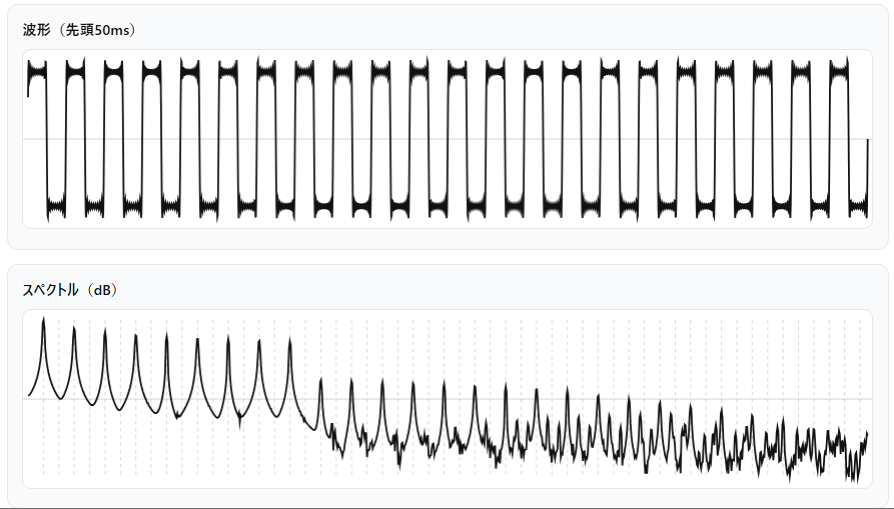
aa = 3
ab = 5
ac = 7
ad = 9
ae = 11
af = 13
ag = 15
ah = 17
T = 2*pi*ph
wave = sin(T) + (sin(T*aa)) / aa + (sin(T*ab)) / ab + (sin(T*ac)) / ac + (sin(T*ad)) / ad + (sin(T*ae)) / ae + (sin(T*af)) / af + (sin(T*ag)) / ag + (sin(T*ah)) / ah
x = wave
wave*0.15ph と、剰余演算子
% と、三項演算子 ? で書いた方が綺麗に書けます。
こちら
で試してみてください。3n-2波（5-limit JI）
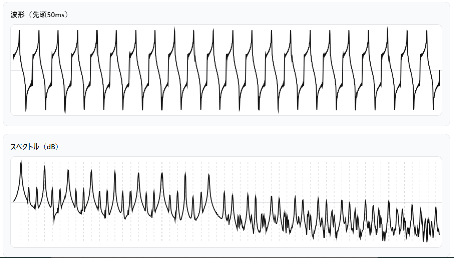
aa = 4
ab = 7
ac = 10
ad = 13
ae = 16
af = 19
ag = 22
ah = 25
T = 2*pi*ph
wave = sin(T) + (sin(T*aa)) / aa + (sin(T*ab)) / ab + (sin(T*ac)) / ac + (sin(T*ad)) / ad + (sin(T*ae)) / ae + (sin(T*af)) / af + (sin(T*ag)) / ag + (sin(T*ah)) / ah
x = wave
wave*0.154n-3波（5-limit JI）
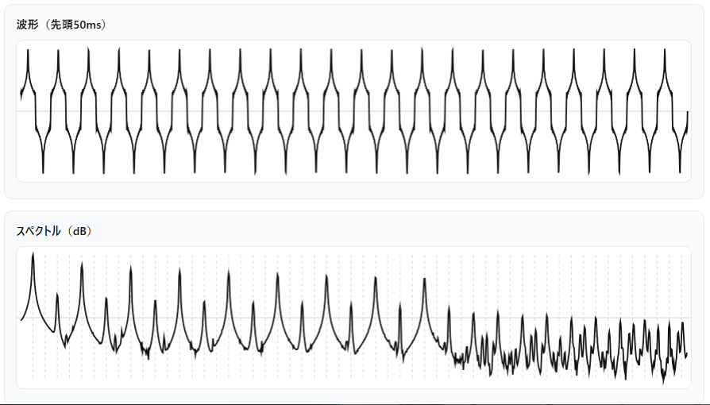
aa = 5
ab = 9
ac = 13
ad = 17
ae = 21
af = 25
ag = 29
ah = 33
T = 2*pi*ph
wave = sin(T) + (sin(T*aa)) / aa + (sin(T*ab)) / ab + (sin(T*ac)) / ac + (sin(T*ad)) / ad + (sin(T*ae)) / ae + (sin(T*af)) / af + (sin(T*ag)) / ag + (sin(T*ah)) / ah
x = wave
wave*0.155n-4波（5-limit JI）
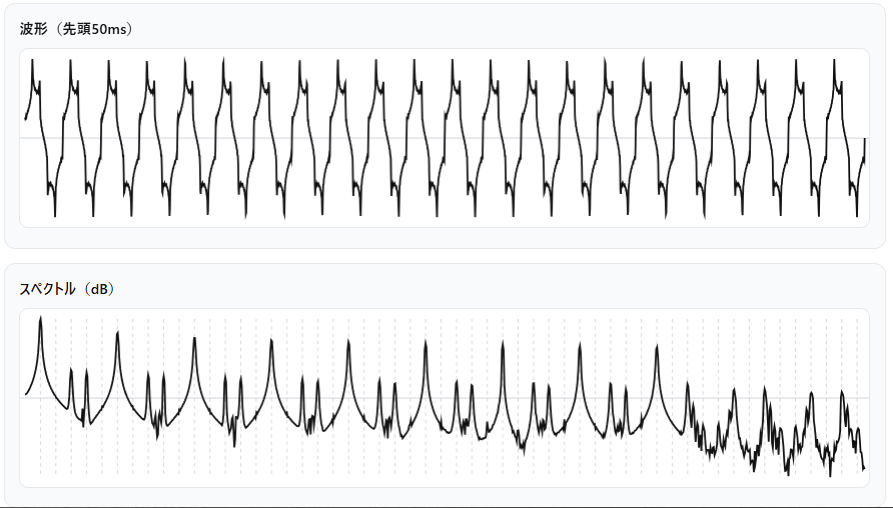
aa = 6
ab = 11
ac = 16
ad = 21
ae = 26
af = 31
ag = 36
ah = 41
T = 2*pi*ph
wave = sin(T) + (sin(T*aa)) / aa + (sin(T*ab)) / ab + (sin(T*ac)) / ac + (sin(T*ad)) / ad + (sin(T*ae)) / ae + (sin(T*af)) / af + (sin(T*ag)) / ag + (sin(T*ah)) / ah
x = wave
wave*0.156n-5波（5-limit JI）
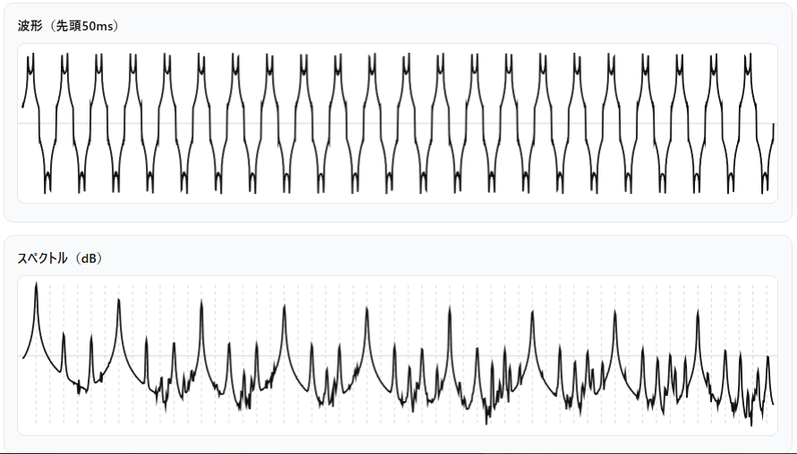
aa = 7
ab = 13
ac = 19
ad = 25
ae = 31
af = 37
ag = 43
ah = 49
T = 2*pi*ph
wave = sin(T) + (sin(T*aa)) / aa + (sin(T*ab)) / ab + (sin(T*ac)) / ac + (sin(T*ad)) / ad + (sin(T*ae)) / ae + (sin(T*af)) / af + (sin(T*ag)) / ag + (sin(T*ah)) / ah
x = wave
wave*0.157n-6波（5-limit JI）
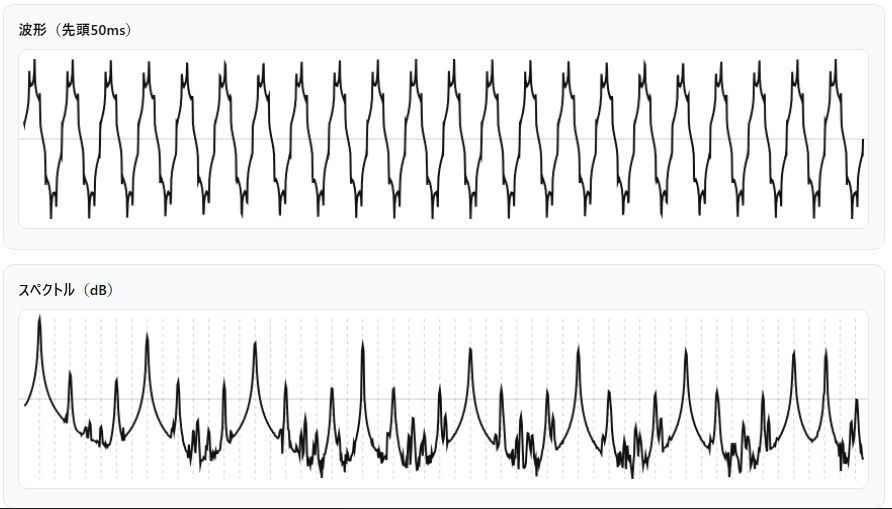
aa = 8
ab = 15
ac = 22
ad = 29
ae = 36
af = 43
ag = 50
ah = 57
T = 2*pi*ph
wave = sin(T) + (sin(T*aa)) / aa + (sin(T*ab)) / ab + (sin(T*ac)) / ac + (sin(T*ad)) / ad + (sin(T*ae)) / ae + (sin(T*af)) / af + (sin(T*ag)) / ag + (sin(T*ah)) / ah
x = wave
wave*0.15部分音合成によるn平均律用波形
12平均律ノコギリ波
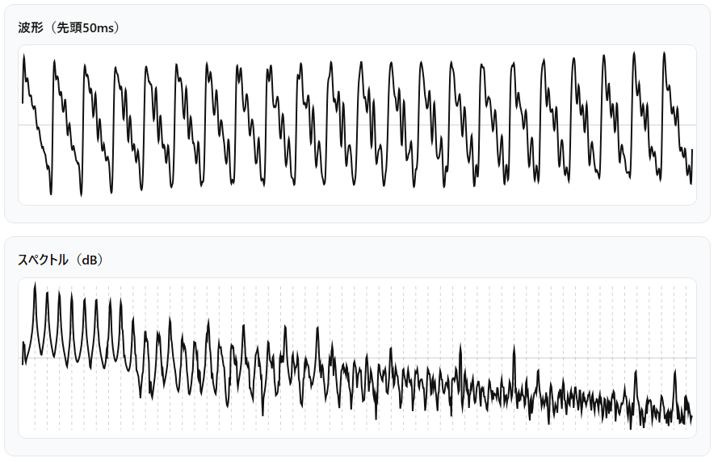
#Formula
T = 2*pi*ph
wave1 = sin(T)
tanh(0.8*wave1)#Partials
#ratio amp
1 1
2^(12/12) 0.5
2^(19/12) 0.333
2^(24/12) 0.25
2^(28/12) 0.20
2^(31/12) 0.166
2^(34/12) 0.14
2^(36/12) 0.125
2^(38/12) 0.11
2^(40/12) 0.10
2^(42/12) 0.09
2^(43/12) 0.083
2^(44/12) 0.0713平均律ノコギリ波
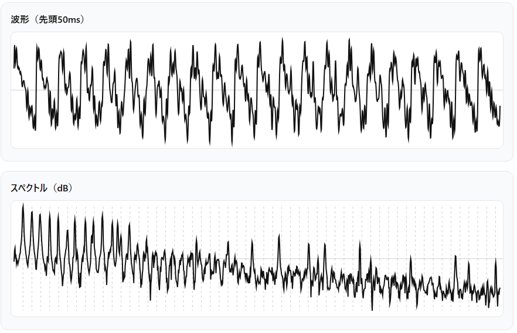
#Formula
T = 2*pi*ph
wave1 = sin(T)
tanh(0.8*wave1)#Partials
#ratio amp
1 1
2^(13/13) 0.5
2^(20/13) 0.333
2^(26/13) 0.25
2^(30/13) 0.20
2^(43/13) 0.166
2^(36/13) 0.14
2^(39/13) 0.125
2^(41/13) 0.11
2^(43/13) 0.10
2^(45/13) 0.09
2^(46/13) 0.083
2^(48/13) 0.0713平均律調整ノコギリ波
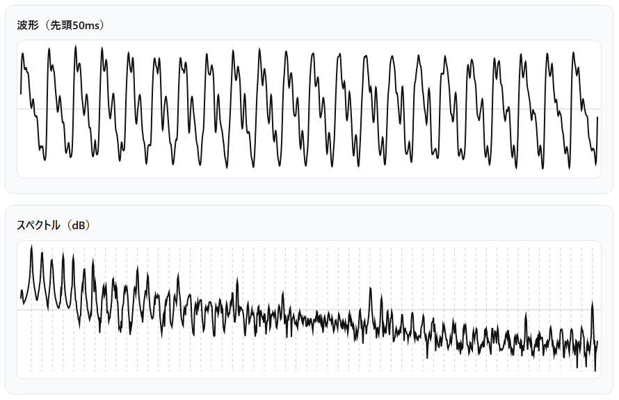
#Formula
T = 2*pi*ph
wave1 = sin(T)
tanh(0.8*wave1)#Partials
#ratio amp
1 1 // 1
2^(13/13) 0.5 // 2
2^(20/13) 0.15 // 3
2^(26/13) 0.25 // 4
2^(30/13) 0.20 // 5
2^(33/13) 0.00 // 6x
2^(36/13) 0.09 // 7
2^(39/13) 0.00 // 8x
2^(45/13) 0.03 // 9デューティ波＋拡張加算合成
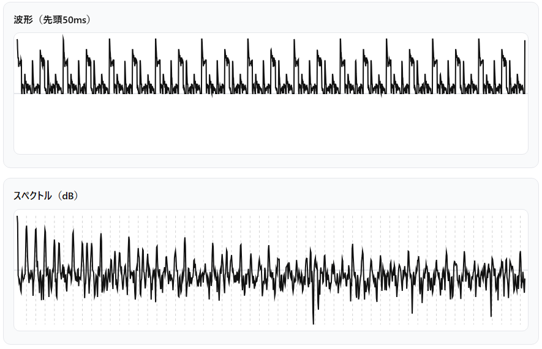
#Formula
wave1 = ( (ph % 1) < 0.2 ? 1 : -1 )
tanh(0.8*wave1)#Partials
#ratio amp
1 1
3 0.333 // 2*(3/2)
9/2 0.222 // 3*(3/2)
6 0.166 // 4*(3/2)
15/2 0.200 // 5*(3/2)
9 0.111 // 6*(3/2)
21/2 0.100 // 7*(3/2)
12 0.083 // 8*(3/2)その他日々作ったもの
6n-5波+AM変調
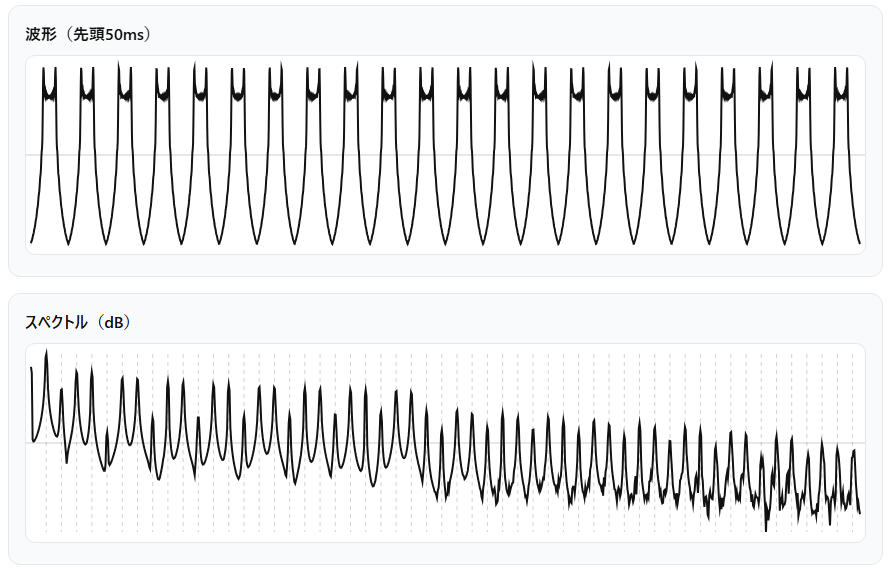
aa = 7
ab = 13
ac = 19
ad = 25
ae = 31
af = 37
ag = 43
ah = 49
T = pi*ph
wave1 = sin(T) + (sin(T*aa)) / aa + (sin(T*ab)) / ab + (sin(T*ac)) / ac + (sin(T*ad)) / ad + (sin(T*ae)) / ae + (sin(T*af)) / af + (sin(T*ag)) / ag + (sin(T*ah)) / ah
wave2 = (wave1)*sin(T)
tanh(0.8*wave2 -0.3)